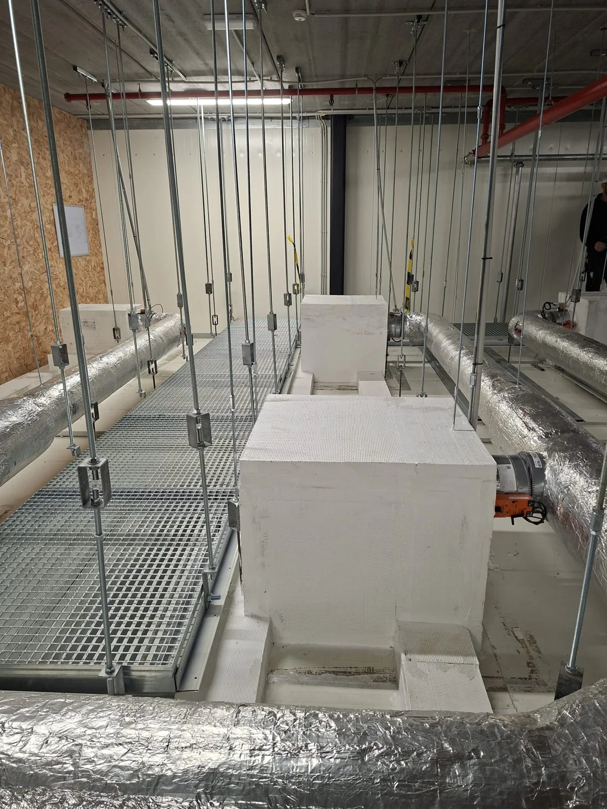

Réalisation · Molenbeek
Abattoir Molenbeek
Installations techniques et encoffrements en milieu industriel.

AB FIRESTOP · NOS PHOTOS DE CHANTIERVoir les 9 photos
L’exécution en images
Détails de
chantier.
9 photos de Abattoir Molenbeek.
Votre projet, bien protégé